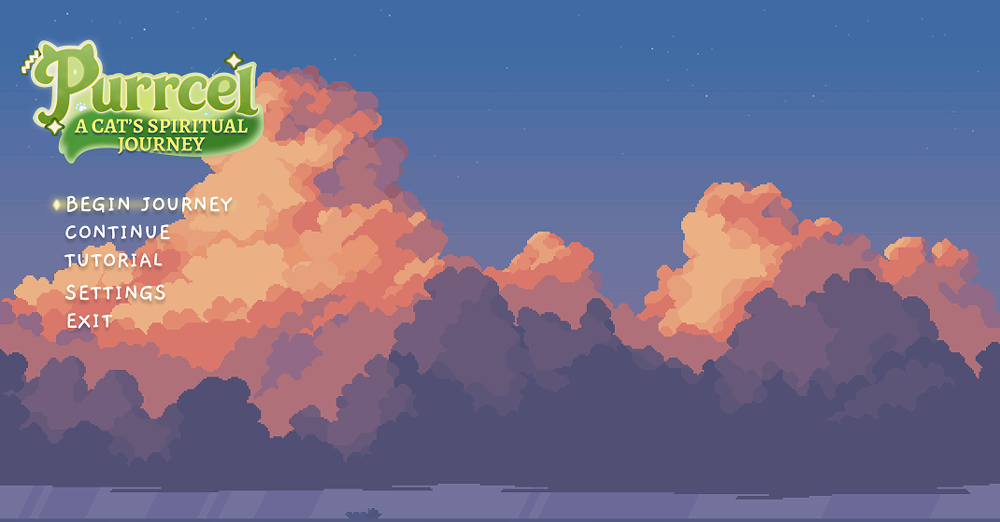

Game UX Research & UI Design Project
PURRCEL
A narrative puzzle-platformer exploring reflection, memory, and connection

Project Overview
Purrcel is a 2D puzzle-platformer where players guide a spirit cat helping souls fulfill their final wishes before passing on.
Gameplay Clip
Environment Art